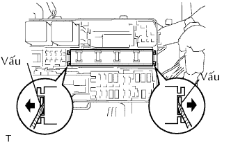
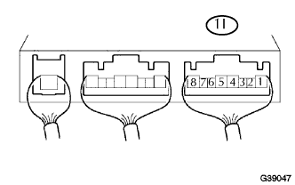

RƠLE ĐÈN SƯƠNG MÙ > KIỂM TRA TRÊN XE |
| 1. KIỂM TRA RƠLE ĐÈN SƯƠNG MÙ |
|  |
Dùng tôvít, tách 2 khóa cài và tháo rơle tích hợp ra khỏi hộp nối khoang động cơ.
|  |
Đo điện áp của rơle FOG.
| Nối dụng cụ đo | Tình trạng công tắc | Điều kiện tiêu chuẩn |
| 1I-4 - Mát thân xe | Công tắc đèn sương mù bật ON và công tắc độ sáng đèn pha đặt ở TAIL hay HEAD. | 10 đến 14V |